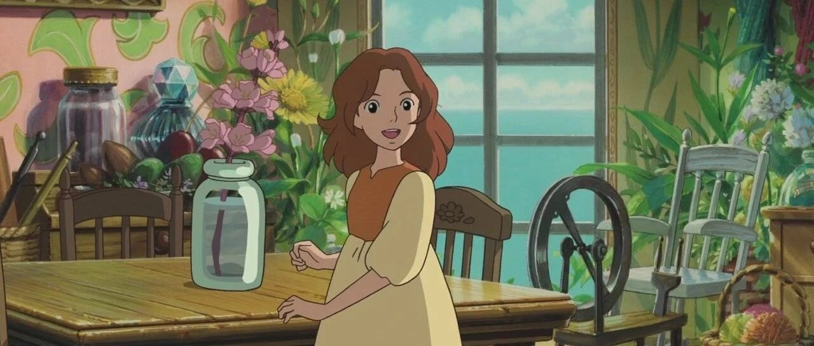

干货｜这样学英语也太高效了！“氛围感”学习法爱上英语～
点击关注秋秋很开心
每周一篇好用APP、学习、成长干货

图：@网络
文：@秋秋
大家好，我是秋秋。
这篇文章有点长，但绝对能从根本上改变你学英语的方法！甚至让你爱上英语。
英语的学习，你去观察大致分为“泛学”和“精学”两种。
“精学”，上课老师一句句的讲解，你花3小时整理笔记都属于。
特点：长久的坚持成绩会进步，但容易丧失学习的乐趣。
一旦你脱离了学习环境，英语就会放置一边，这也是一直学不好的原因。
“泛学”，像看新闻、听英文歌这种，可以培养语感、磨耳朵、增加学英语的趣味性。
对你的语言能力提升较缓，但长久来看，反而是拉开差距的关键。
如果你学了很久英语都提升不明显，真的不是“精学”上出了问题。
你只是从没有学会“泛学”！甚至没人教过你！
那泛学（氛围感学习）到底怎么做？如何用简单、高效、有趣的方式爱上英语？
今天这篇文章，我就斗胆讲一下吧。
1、打好基础
不管精学还是泛学，单词语法都是最基础的。
（1）单词：赵铁夫单词记忆法

真的听了很多单词课，单词书也从中考、高考、大学四六级到考研，买了不下十几本了。
要么就是枯燥！要么就是繁琐！
最后还是喜马拉雅上的这个课，让我听一节就爱上。推荐！
它把单词的趣味性和专业性结合的很好，让你听着津津有味，还不知不觉把单词记住。

里面单词的来历、渊源都讲的很清楚，就像甲骨文一样，英语有着自己的历史。
整体风格是搞笑又欢快，每一节课都绘声绘色，缺点就是例子太少，不过作为单词记忆方法，大家真的可以试一下。
（2）语法：赖世雄一经典语法书

赖世雄，台湾与大陆地区做英语广播教学的第一人，美明尼苏达大学英语教师。
他写的书或讲的课，真的算是英语学习界的“在天之灵”了。

尤其语法书，特别适合零基础、起点低的同学去学习。
每一节课都讲的很细很慢，不是一下子就给你列出整个框架，而是一点一点去讲，每天记一点，让你地基打的特别牢。

如果你能每天跟着学，那语法真的就不是事儿了～
当然，上面这两个教材特点都不是很新的，但真的胜在经典，大家完全可以放心去试。
2、泛听
打好基础，就开始泛学了。
泛听方法很多，我就先讲1-2种方法。
即能锻炼语感、还能开拓视野增长见识，一举多得、何乐不为？
其实在你没时间看书的情况下，听书真的是个不错的选择。
一个好的朗读者不仅能让你身临其境，甚至还能激发你学英语的兴趣。
每天睡前听一听，沉浸在英文的气氛中，到听力考试你也不会再有紧张感。


听的话可以用网易云音乐、喜马拉雅。
一开始可以听一些英文名著，比如《茶花女》《了不起的盖茨比》。
英语不太好的也可以提前看下中文了解下故事情节，听的时候才不会因为畏难而放弃。
就用手机里面的App：播客，就可以。

推荐几个节目大家可以试一下：
（1）潘吉Jenny告诉你

适合：英语基础一般，喜欢追特点的朋友
由一个中国人一个美国人共同主持，中文+英文的方式，很易于理解。
内容非常有趣，针对于当下各个领域热点、听起来不会觉得无聊。
🌟时长：10-25min
🌟语速：较慢
🌟更新频率：一周/更
（2）高效磨耳朵👂

适合：基础较弱的朋友
这个每集都是一篇小文章，有听力原文！还有有重要词汇提示，所以基础薄弱的小伙伴抓紧试一试。
🌟时长：4-5min
🌟语速：正常
🌟更新频率：两天/更
另外，我发现手机自带的App播客里面，还有很多免费无广告的资源，质量都很高！大家喜欢听东西的一定要利用起来。

3、泛读
说完了泛听，接下来就是泛读了。
泛读和精读最大的区别是：精读在意一个句子的单词、语法、结构、句型，恨不得读一篇文章，把每一个单词、句子都弄透。
精读不在意这些细节，而是对整体的把握。
像你做阅读理解，可能整个文章很多单词句子不理解，但并不影响你做题。
我们泛读练习的是：把握重点的能力、、提高阅读速度、培养阅读兴趣、了解更多英语知识背景。
阅读材料：
（1）英文小说
也是从不太难的，《老人与海》《秘密花园》这种开始，不要边读边查单词！不要读一节再回头好几次去看前面的。
只要能够读下去、了解大概意思即可，查单词的工作放到最后。
（2）新闻、报刊
App推荐：FT中文网。
杂志：《看世界》《经济学人》这种期刊杂志。

值得一提的是，《经济学人》这个期刊真的有必要好好读，因为大学四六级、各种考试题就直接来自这本书。
它有很多板块：

【The world this week】 全球要闻
速读一周国际新闻简讯；
【Leaders】 社论
针对本周热点时间进行报道与解读，文章短小精悍，1000字左右，很适合练习用，TED中最具有阅读价值的板块之一；
【Letters】 读者来信
一页纸篇幅，1000字左右，有可能是政府官员等重要人物或普通读者，讨论内容为《经济学人》两周前发表内容；
【Briefing】 深度报道
通常从Leaders中选取一篇做深度分析，这个板块篇幅最长，对英语能力要求较高；
【United States, The Americas, Asia, China, Middle East and Africa, Europe, Britain】区域板块
【Technology Quarterly*】科技季刊
【International】 国际
【Special Report】 特别报告
大家如果阅读的话，直接选择自己喜欢的板块即可。
一开始会觉得有些难，但坚持下去真的会爱上，也不会把语言的学习当成一种任务。

学英语不是一蹴而就的，以上方法主要针对平时就已经好好去上课、但英语成绩没起色、方法不太对的人。
不管是“精学”还是“泛学”，都是针对我们自身英语情况的一个学习方法，没有好坏和先后之分，“精学”“泛学”都很重要。
只希望以上“氛围感”学英语法也能帮助到你！尤其还不知道这些学习方法的朋友，可以用起来，效果绝对有！
点这里，「教你做高效周计划」